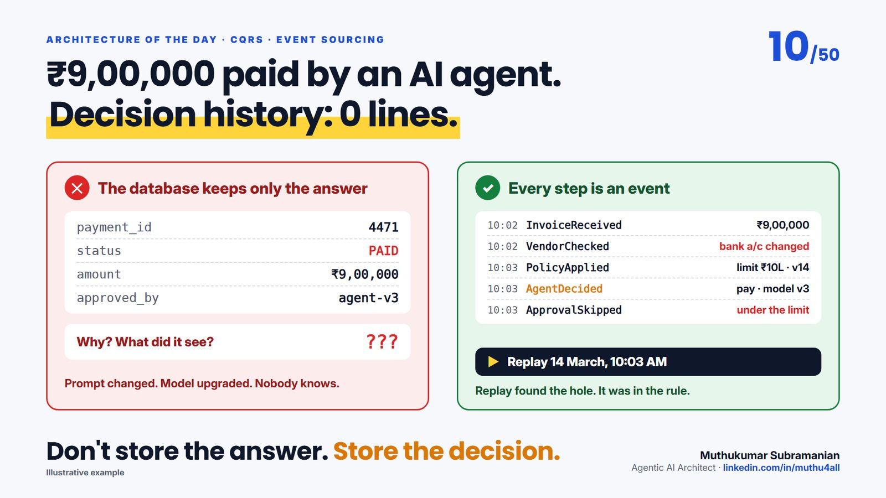

The Auditor Asked Why Your AI Agent Paid ₹9 Lakh. Can You Replay the Decision?
By Muthukumar Subramanian · Agentic AI Architect

Six months after the payment, the auditor's email arrived. One line.
"Why did your system pay ₹9,00,000 to this vendor on 14 March?"
The finance team opened the database and found a single row: payment 4471, status PAID, approved by agent-v3. That was all of it. The prompt had been changed twice since then, the model had been upgraded, and the vendor's record had been edited. Nobody could say what the agent saw that morning, or why it said yes. (The company and the numbers are illustrative. I've seen the pattern more than once.)
An AI agent that can't explain a payment is a liability with a login.
The architecture today
CQRS splits the system in two. One side takes commands ("pay this invoice") and plain code decides whether they're allowed. The other side serves reads from views built for asking questions.
Event sourcing changes what you store. You don't overwrite the current state. You append every change as an event: invoice received, vendor checked, payment approved. The current state is simply all the events added up.
If that sounds abstract, look at a bank passbook. Your balance isn't stored on its own. It's every entry since you opened the account, line after line, and nobody rubs one out.
👉 [IMAGE: A-day10-2-in-article-architecture.png]
Caption: The agent reads from the read side and only proposes commands. Plain code decides. Every step, including the agent's own decision, lands in an append-only log. Grey is what you already have. Amber is new.
Where AI plugs in now: read here, propose there, record everything
Three changes, all low-risk:
→ The agent reads only from read models. It never touches the write database. It can't corrupt anything there.
→ The agent proposes, plain code decides. It sends a command like any other user. The same checks run: limits, duplicates, a changed bank account. That's the lesson from Day 5, when an agent paid the same invoice twice.
→ The agent's decision becomes an event too. Not just "paid". What it read, which policy version applied, which model and prompt version, which tools it called, what it concluded, and who approved.
That last one is the new habit. Most teams log the answer. Very few log the decision.
Where it's heading with agents
Once every decision is an event, you can replay it. Rebuild the read models exactly as they stood at 10:03 AM on 14 March, and look at what the agent was looking at.
In our story, the replay takes four minutes and finds the real problem. The vendor's bank account had changed three days earlier. The agent saw the flag. The payment rule, version 14, didn't block it, because ₹9 lakh was under the ₹10 lakh approval limit. The agent followed the rules. The rules had a hole.
That's the finding you want in an audit report. Without the replay, the agent just gets the blame.
In two or three years, I expect regulators to stop accepting "the AI decided". The RBI's FREE-AI committee report (August 2025), advisory for now, already lists accountability and "understandable by design" among its principles. The lenders who can replay a decision on demand will have a much easier inspection.
There's a second use. Before upgrading a model, replay last quarter's events through it and compare its decisions. A rehearsal on real history, with no real money at risk.
👉 [IMAGE: A-day10-3-in-article-decision-record.png]
Caption: Eight fields per agent decision. Store them and you can answer the auditor. Example values are illustrative.
Watch it work
The auditor asks. The team presses replay. The events come back one by one, and the hole in the rule shows up on its own.
👉 [GIF: A-day10-4-in-article-replay.gif]
Caption: Replaying one ₹9 lakh decision, event by event. All details illustrative.
Pros
→ Every agent decision can be explained months later, which is what auditors and regulators actually ask for
→ You can test a new model or prompt against real history before it goes live
→ The agent can't quietly change data. It can only propose, and the log keeps everything
Cons
→ It's more work to build than one table with a status column, and teams new to it find it hard
→ Replay brings back what the agent saw and said. It won't make a model produce the same words twice, because models aren't fully deterministic
→ Logs that keep everything also keep personal data, so you need retention and masking rules from day one
The hard parts
Retrofitting is the real job. Your core banking system or ERP wasn't built to emit events. You'll often have to read its database changes from the side (change data capture), and the old system's quirks come with them.
Storage grows too. A full decision record is much bigger than a status flag.
And someone has to own the replay. An AgentOps engineer, the person who runs agents in production much as an SRE runs services, should run a replay drill every month: pick three random decisions and rebuild them. If you can't do it in a drill, you won't do it when the auditor writes.
The opportunity
Every bank, NBFC, insurer and co-operative bank putting agents into payments, claims or lending will need a "decision ledger". That means a record of every agent decision, a replay console an auditor can use without an engineer, and a report that holds up in an inspection.
That's a product, and a services business: fitting event logs beside old core systems never built for them. The person who wins this deal is often a forward deployed engineer (FDE), an engineer who works inside the customer's team, who sits with internal audit for two weeks and learns exactly what they'll ask. These titles are still settling, but the need isn't. Audit has always followed new technology into the bank. It's coming for agents next.
Tools to try
KurrentDB (formerly EventStoreDB) as the event store · Axon Framework for CQRS and event sourcing in Java · Apache Kafka as an event log, with Debezium to stream changes out of an old database · Langfuse or OpenTelemetry for agent traces · any model through tool calling: OpenAI, Claude, Gemini or Bedrock.
That's Phase 1 done: ten classic architectures, each with an AI agent added to it. Phase 2 starts tomorrow with data.
Your turn 👇
For an AI agent that moves money: store the answer, or store the decision? One word.
Tag the person in your team who'd get that auditor's email.
Day 10 of 50 · follow along. Tomorrow: Day 11 · Your AI Agent Told the Board ₹4 Crore. The Data Warehouse Says ₹3.1 Crore.